Motivation behind Carry Look-Ahead Adder :
In ripple carry adders, for each adder block, the two bits that are to be added are available instantly. However, each adder block waits for the carry to arrive from its previous block. So, it is not possible to generate the sum and carry of any block until the input carry is known. The 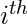 block waits for the 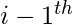 block to produce its carry. So there will be a considerable time delay which is carry propagation delay.

Consider the above 4-bit ripple carry adder. The sum  is produced by the corresponding full adder as soon as the input signals are applied to it. But the carry input 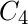 is not available on its final steady state value until carry
is produced by the corresponding full adder as soon as the input signals are applied to it. But the carry input 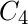 is not available on its final steady state value until carry  is available at its steady state value. Similarly depends on
is available at its steady state value. Similarly depends on  and on 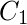. Therefore, though the carry must propagate to all the stages in order that output
and on 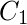. Therefore, though the carry must propagate to all the stages in order that output  and carry settle their final steady-state value.
and carry settle their final steady-state value.
The propagation time is equal to the propagation delay of each adder block, multiplied by the number of adder blocks in the circuit. For example, if each full adder stage has a propagation delay of 20 nanoseconds, then will reach its final correct value after 60 (20 × 3) nanoseconds. The situation gets worse, if we extend the number of stages for adding more number of bits.
Carry Look-ahead Adder :
A carry look-ahead adder reduces the propagation delay by introducing more complex hardware. In this design, the ripple carry design is suitably transformed such that the carry logic over fixed groups of bits of the adder is reduced to two-level logic. Let us discuss the design in detail.


Consider the full adder circuit shown above with corresponding truth table. We define two variables as ‘carry generate’ 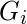 and ‘carry propagate’  then,
then,

The sum output and carry output can be expressed in terms of carry generate and carry propagate as

where produces the carry when both  , 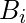 are 1 regardless of the input carry. is associated with the propagation of carry from 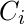 to
, 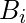 are 1 regardless of the input carry. is associated with the propagation of carry from 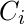 to  .
.
The carry output Boolean function of each stage in a 4 stage carry look-ahead adder can be expressed as

From the above Boolean equations we can observe that does not have to wait for and to propagate but actually is propagated at the same time as and . Since the Boolean expression for each carry output is the sum of products so these can be implemented with one level of AND gates followed by an OR gate.
The implementation of three Boolean functions for each carry output (, and ) for a carry look-ahead carry generator shown in below figure.
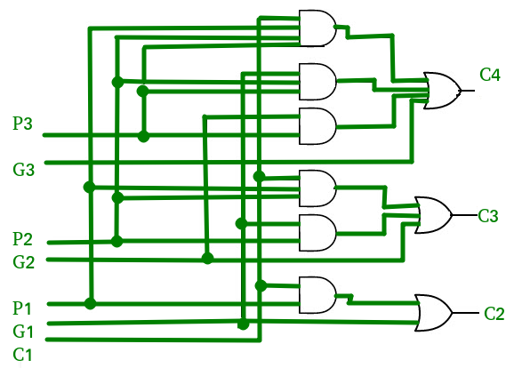
Time Complexity Analysis :
We could think of a carry look-ahead adder as made up of two “parts”
- The part that computes the carry for each bit.
- The part that adds the input bits and the carry for each bit position.
The  complexity arises from the part that generates the carry, not the circuit that adds the bits.
complexity arises from the part that generates the carry, not the circuit that adds the bits.
Now, for the generation of the  carry bit, we need to perform a AND between (n+1) inputs. The complexity of the adder comes down to how we perform this AND operation. If we have AND gates, each with a fan-in (number of inputs accepted) of k, then we can find the AND of all the bits in 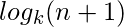 time. This is represented in asymptotic notation as 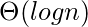.
carry bit, we need to perform a AND between (n+1) inputs. The complexity of the adder comes down to how we perform this AND operation. If we have AND gates, each with a fan-in (number of inputs accepted) of k, then we can find the AND of all the bits in 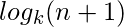 time. This is represented in asymptotic notation as 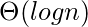.
Advantages and Disadvantages of Carry Look-Ahead Adder :
Advantages –
- The propagation delay is reduced.
- It provides the fastest addition logic.
Disadvantages –
- The Carry Look-ahead adder circuit gets complicated as the number of variables increase.
- The circuit is costlier as it involves more number of hardware.
GATE CS Corner Questions
Practicing the following questions will help you test your knowledge. All questions have been asked in GATE in previous years or in GATE Mock Tests. It is highly recommended that you practice them.
- GATE CS 2016 (Set-1), Question 43
- GATE CS 2004, Question 90
- GATE CS 2007, Question 85
- GATE CS 2006, Question 85
- GATE CS 1997, Question 15
References –
iitkgp.virtual-labs
Carry-lookahead adder – Wikipedia